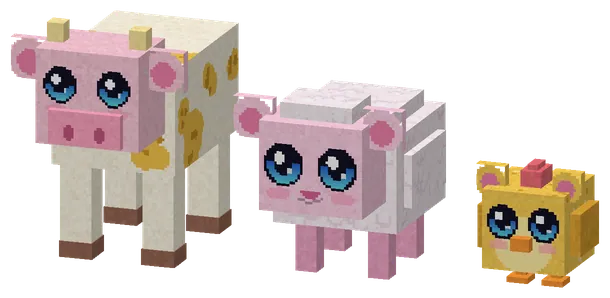
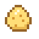
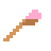
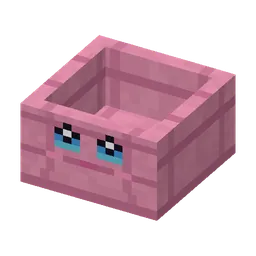
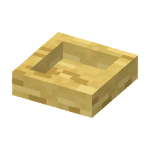
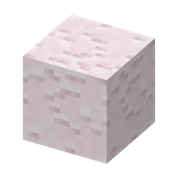
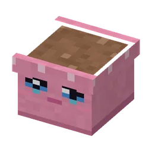
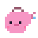

De boerderij van Boerin Hooibaal: guhschaapjes, knabbelkippetjes, guhkoeien en een moestuin
De Guhboerderij
A farm in the guhweides and on the kaasvlakte (superkompas: Knus). Boerin Hooibaal (with a straw in her mouth) has a klusje for you every day and sells brushes, feed, seeds and watering cans. Her animals are new: the guhschaapje, the knabbelkippetje and the guhkoe (they also live in the wild now and then). Care for an animal in two of three ways on a day (pet it with an empty hand, brush it with the guhborstel, feed it knabbelvoer or from a filled guh_voerbak) and it is happy: the schaapje drops pluiswol (and looks shorn until the next day), the kippetje lays a knabbelei in a kippennestje, and the guhkoe gives kaasmelk in an empty bottle. Those go to the bakery, the tea house, the creche and the camp sites.
Een boerderij in de guhweides en op de kaasvlakte (superkompas: Knus). Boerin Hooibaal (met een strootje in haar mond) heeft elke dag een klusje voor je en verkoopt borstels, voer, zaadjes en gieters. Haar dieren zijn nieuw: het guhschaapje, het knabbelkippetje en de guhkoe (ze lopen soms ook in het wild rond). Verzorg een dier op een dag op twee van de drie manieren (aaien met een lege hand, borstelen met de guhborstel, voeren met knabbelvoer of uit een gevulde guhvoerbak) en het is blij: het schaapje laat pluiswol los (en is geschoren tot de volgende dag), het kippetje legt een knabbelei in een kippennestje, en de guhkoe geeft kaasmelk in een leeg flesje. Die gaan naar de bakkerij, het theehuisje, de creche en de kampeerplekjes.

Guhkoe, guhschaapje, knabbelkippetje
Always sweet and passive, with a Guhdex page each (stand close to them). Moeh! Bleh! Tok tok, vahoeg!
Altijd lief en vredig, met elk een Guhdex-pagina (ga er dichtbij staan). Moeh! Bleh! Tok tok, vahoeg!






LootBuit
| ItemVoorwerp | CountAantal | ChanceKans |
|---|---|---|
| 3–8 | oftenvaak | |
| 4–10 | sometimessoms | |
| 2–5 | sometimessoms | |
| Knabbelei | 1–3 | sometimessoms |
| 2–5 | sometimessoms | |
| 2–4 | sometimessoms | |
| 2–4 | sometimessoms | |
| Hooibaal | 1–3 | sometimessoms |
| 1–2 | sometimessoms | |
 Guhbloempot | 1–2 | oftenvaak |
| Guhborstel | 1 | oftenvaak |
 Guhgieter | 1 | oftenvaak |
| Boerderijzakdoek | 1 | sometimessoms |
| 1–3 | 30% |